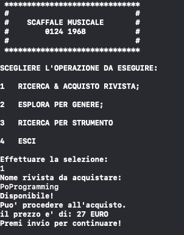

Il
programma ha
lo scopo di permettere all'utente di ottenere le informazioni sulle riviste nello scaffale, senza controllarlo fisicamente.
Come si vede dall'immagine in alto, e' possibile scegliere tra quattro opzioni:
Digitando 1-> "RICERCA & ACQUISTO RIVISTA". Si potra' immettere il nome di una rivista e acquistarla in caso essa risulti disponibile.

Viene inoltre mostrato come viene gestita la situazione in cui la rivista non sia disponibile..
Implementazione in C della gestione riviste